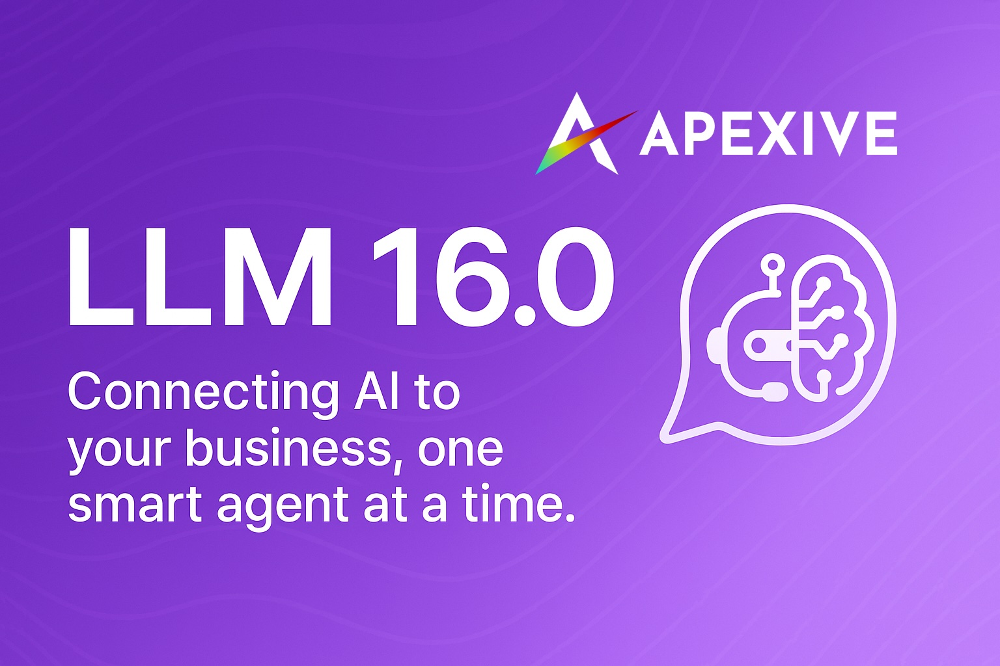

Model Context Protocol Integration for Odoo AI | Connect to External Tool Providers
Extend your Odoo AI capabilities with the Model Context Protocol (MCP) integration. This module allows your LLM models to communicate with external MCP-compliant servers, expanding the tools and functions available to your AI assistants.
MCP is a standardized protocol for AI systems to discover and interact with external tools and services. By supporting this protocol, your Odoo instance can connect to a wide range of specialized tool providers and expand AI capabilities without custom integration work.
base,
mail, llm, llm_tool.
Once installed, you can easily connect to MCP-compliant servers:
Enhance your Odoo AI capabilities with external tools through the Model Context Protocol.
Download from GitHubThe Model Context Protocol is a standardized way for AI systems to interact with external tools and services. By supporting MCP, your Odoo instance can leverage a growing ecosystem of specialized AI tools.
For more information about MCP, visit the official protocol repository.